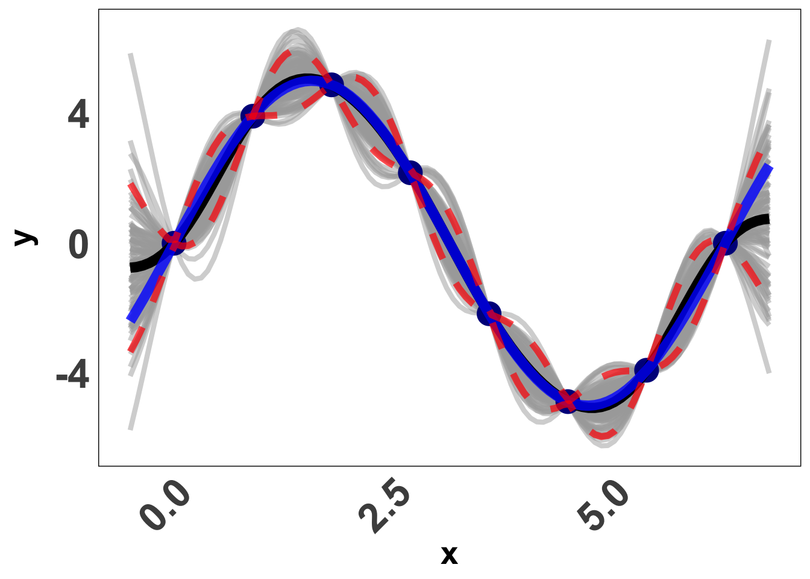

VectorByte Methods Training: Introduction to Gaussian Processes for Time Dependent Data (notes)
Introduction to Gaussian Processes for Time Dependent Data
This document introduces the conceptual background to Gaussian Process (GP) regression, along with mathematical concepts. We also demonstrate briefly fitting GPs using the laGP(Gramacy 2016) package in R. The material here is intended to give a more verbose introduction to what is covered in the lecture in order to support a student to work through the practical component. This material has been adapted from chapter 5 of the book Surrogates: Gaussian process modeling, design and optimization for the applied sciences by Robert Gramacy.
Gaussian Processes
A Gaussian Process (GP) is a non-parameteric and flexible method to model data. Here, we assume that the data follow a Multivariate Normal Distribution. It is widely used in the fields of spatial statistics commonly known as kriging as well as machine learning as a surrogate model due to it’s ability of making fast predictions with good uncertainty quantification.
In spatial statistics, we want to emphasize the relationship between the distance of different locations along with the response of interest. A GP allows us to do that as we will see in this tutorial. A different application of a GP involves it’s usage as a surrogate. A surrogate model is used to approximate a computer model and/or field experiments where running the experiments may be cost or time ineffective and/or infeasible.
For e.g. Suppose we wish to estimate the amount of energy released when a bomb explodes. Conducting this experiment repeatedly a large number of times to collect data seems infeasible. In such cases, we can use a surrogate model to the field data and make predictions for different input locations.
In the field of ecology, as we will see in this tutorial, we will use a Gaussian Process model as a Non-Parametric Regression tool, similar to Linear Regression. We will assume our data follows a GP, and use Bayesian Methods to infer the distribution of new locations given the data. The predictions obtained will have good uncertainty quantification which is ofcourse valuable in this field due to the noisy nature of our data.
Gaussian Process Prior
In our setup, we assume that the data follows a Multivariate Normal Distribution. We can think of this as a Prior. Mathematically, we can write it as:
Y_n \sim N \ ( \ \mu \ , \ \Sigma_n \ )
Here, Y and \mu is an n \times 1 vector and \Sigma_n is a positive semi definite matrix. This means that,
x^T \Sigma_n x > 0 \ \text{ for all } \ x \neq 0.
For our purposes, we will consider \mu = 0.
In Simple Linear Regression, we assume \Sigma_n = \sigma^2 \mathbb{I}. This means that Y_1 \ , Y_2 \ \ ... \ \ Y_n are uncorrelated with each other. However, In a GP, we assume that there is some correlation between the responses. A common covariance function is the squared exponential kernel, which invovles the Euclidean distance i.e. for two inputs x and x', the correlation is defined as,
\Sigma(x, x') = \exp \left( \ \vert \vert{x - x'} \vert \vert^2 \ \right)
This creates a positive semi-definite correlation kernel. It also uses the proximity of x and x' as a measure of correlation i.e. the closer two points in the input space are, the more highly their corresponding responses are correlated. We will learn the exact form of \Sigma_n later in the tutorial. First, we need to learn about MVN Distribution and the Posterior Distribution given the data.
Multivariate Normal Distribution
Suppose we have X = (X_1, X_2)
\begin{equation} X = \begin{bmatrix} X_1 \\ X_2 \\ \end{bmatrix} \; , \; \mu = \begin{bmatrix} \mu_1\\ \mu_2\\ \end{bmatrix}\; , \; \end{equation} where X_1 and \mu_1 are q \times 1 and X_2 and \mu_2 are (N-q) \times 1.
\begin{equation} \Sigma = \begin{bmatrix} \Sigma_{11} & \Sigma_{12}\\ \Sigma_{21} & \Sigma_{22}\\ \end{bmatrix} \; \; \; \\[5pt] \text{with dimensions } \; \; \begin{bmatrix} q \times q & q \times (N-q) \\ (N -q) \times q & (N-q) \times (N-q)\\ \end{bmatrix} \; \end{equation}
Then, we have
\begin{equation} \begin{bmatrix} X_1 \\ X_2 \\ \end{bmatrix} \ \sim \ \mathcal{N} \left( \; \begin{bmatrix} \mu_1 \\ \mu_2 \\ \end{bmatrix}\; , \; \begin{bmatrix} \Sigma_{11} & \Sigma_{12}\\ \Sigma_{21} & \Sigma_{22}\\ \end{bmatrix} \; \right) \\[5pt] \end{equation}
Now we can derive the conditional distribution of X_1 \vert X_2 using properties of MVN.
X_1 \vert X_2 \ \sim \mathcal{N} (\mu_{X_1 \vert X_2}, \ \Sigma_{X_1 \vert X_2})
where,
\mu_{X_1 \vert X_2} = \mu_1 + \Sigma_{12}\Sigma_{22}^{-1}(x_2 - \mu_2)
\Sigma_{X_1 \vert X_2} = \Sigma_{11} - \Sigma_{12}\Sigma_{22}^{-1} \Sigma_{21}
Now, let’s look at this in our context.
Suppose we have, D_n = (X_n, Y_n) where Y_n \sim N \ ( \ 0 \ , \ \Sigma_n \ ). Now, for a new location x_p, we need to find the distribution of Y(x_p).
We want to find the distribution of Y(x_p) \ \vert \ D_n. Using the information from above, we know this is normally distributed and we need to identify then mean and variance. Thus, we have
\begin{equation} \begin{aligned} Y(x_p) \vert \ D_n \ & \sim \mathcal{N} \left(\mu(x_p) \ , \ \sigma^2(x_p) \right) \; \; \text{where, }\\[3pt] \mu(x_p) \ & = \Sigma(x_p, X_n) \Sigma_n^{-1}Y_n \; \;\\[3pt] \sigma^2(x_p) \ & = \Sigma(x_p, x_p) - \Sigma(x_p, X_n) \Sigma_n^{-1}\Sigma(X_n, x_p) \\[3pt] \end{aligned} \end{equation}
Example: GP for Toy Example
Suppose we have data from the following function, Y(x) = 5 \ \sin (x)
Now we use the above, and try and obtain Y(x_p) \vert Y. Here is a visual of what a GP prediction for this function looks like. Each gray line is a draw from our predicted normal distribution, the blue line is the truth and the black line is the mean prediction from our GP. The red lines are confidence bounds. Pretty good? Let’s learn how we do that.
Covariance Function
As mentioned before, the main action is in the specification of \Sigma_n. Let’s express \Sigma_n = \tau^2 C_n where C_n is the correlation function. We will be using the squared exponential distance based correlation function. The kernel can be written down mathematically as,
C_n = \exp{ \left( -\frac{\vert\vert x - x' \vert \vert ^2}{\theta} \right ) + g \mathbb{I_n}}
Here, if x and x' are closer in distance, the responses are more highly correlated. Along with our input space we also notice three other paramters; which in this context are referred to as hyper-parameters as they are used for fine-tuning our predictions as opposed to directly affecting them.
We have three main hyper-parameters here:
\tau^2: Scale
This parameter dictates the amplitude of our function. A MVN Distribution with scale = 1 will usually have data between -2 to 2. As the scale increases, this range expands. Here is a plo that shows two different scales for the same function, with all other parameters fixed.
library(mvtnorm)
library(laGP)
set.seed(24)
n <- 100
X <- as.matrix(seq(0, 20, length.out = n))
Dx <- laGP::distance(X)
g <- sqrt(.Machine$double.eps)
Cn <- (exp(-Dx) + diag(g, n))
Y <- rmvnorm(1, sigma = Cn)
set.seed(28)
tau2 <- 25
Y_scaled <- rmvnorm(1, sigma = tau2 * Cn)
par(mfrow = c(1, 2), mar = c(5, 5, 4, 2), cex.axis = 2, cex.lab = 2, cex.main = 3, font.lab = 2)
# Plot 1
matplot(X, t(Y), type = 'l', main = expression(paste(tau^2, " = 1")),
ylab = "Y", xlab = "X", lwd = 2, col = "blue")
# Plot 2
matplot(X, t(Y_scaled), type = 'l', main = expression(paste(tau^2, " = 25")),
ylab = "Y", xlab = "X", lwd = 2, col = "red")\theta: Length-scale
The length-scale controls the wiggliness of the function. It is also referred to as the rate of decay of correlation. The smaller it’s value, the more wiggly the function gets. This is because we expect the change in directionalilty of the function to be rather quick. We will once again demonstrate how a difference in magnitude of \theta affects the function, keeping everything else constant.
set.seed(1)
n <- 100
X <- as.matrix(seq(0, 10, length.out = n))
Dx <- laGP::distance(X)
g <- sqrt(.Machine$double.eps)
theta1 <- 0.5
Cn <- (exp(-Dx/theta1) + diag(g, n))
Y <- rmvnorm(1, sigma = Cn)
theta2 <- 5
Cn <- (exp(-Dx/theta2) + diag(g, n))
Y2 <- rmvnorm(1, sigma = Cn)
par(mfrow = c(1, 2), mar = c(5, 5, 4, 2), cex.axis = 2, cex.lab = 2, cex.main = 3, font.lab = 2)
matplot(X, t(Y), type= 'l', main = expression(paste(theta, " = 0.5")),
ylab = "Y", ylim = c(-2.2, 2.2), lwd = 2, col = "blue")
matplot(X, t(Y2), type= 'l', main = expression(paste(theta, " = 5")),
ylab = "Y", ylim = c(-2.2, 2.2), lwd = 2, col = "red")An extenstion: Anisotropic GP
In a multi-dimensional input setup, where X_{n \times m} = (\underline{X}_1, ... \underline{X}_m). Here, the input space is m-dimensional and we have n observations. We can adjust the kernel so that each dimension has it’s own \theta i.e. the rate of decay of correlation is different from one dimension to another. This can be done by simply modifying the correlation function, and writing it as,
C_n = \exp{ \left( - \sum_{k=1}^{m} \frac{\vert\vert x - x' \vert \vert ^2}{\theta_k} \right ) + g \mathbb{I_n}}
This type of modelling is also referred to a seperable GP since we can take the sum outside the exponent and it will be a product of m independent dimensions. If we set all \theta_k= \theta, it would be an isotropic GP.
g: Nugget
This parameter adds some noise into the function. For g > 0, it determines the magnitude of discontinuity as x' tends to x. It is also called the nugget effect. For g=0, there would be no noise and the function would interpolate between the points. This effect is only added to the diagonals of the correlation matrix. We never add g to the off-diagonal elements. This also allows for numeric stability. Below is a snippet of what different magnitudes of g look like.
library(mvtnorm)
library(laGP)
n <- 100
X <- as.matrix(seq(0, 10, length.out = n))
Dx <- laGP::distance(X)
g <- sqrt(.Machine$double.eps)
Cn <- (exp(-Dx) + diag(g, n))
Y <- rmvnorm(1, sigma = Cn)
Cn <- (exp(-Dx) + diag(1e-2, n))
L <- rmvnorm(1, sigma = diag(1e-2, n))
Y2 <- Y + L
par(mfrow = c(1, 2), mar = c(5, 5, 4, 2), cex.axis = 2, cex.lab = 2, cex.main = 3, font.lab = 2)
plot(X, t(Y), main = expression(paste(g, " < 1e-8")),
ylab = "Y", xlab = "X", pch = 19, cex = 1.5, col = 1)
lines(X, t(Y), col = "blue", lwd = 3)
plot(X, t(Y2), main = expression(paste(g, " = 0.01")),
ylab = "Y", xlab = "X", pch = 19, cex = 1.5, col = 1)
lines(X, t(Y), col = "blue", lwd = 3)An extension: Heteroskedastic GP
We will study this in some detail later, but here instead of using one nugget g for the entire model, we use a vector of nuggets \Lambda; one unique nugget for each unique input i.e. simply put, a different value gets added to each diagonal element.
Back to GP fitting
For now, let’s get back to GP and fitting and learn how to use it. We have already seen a small example of the laGP package in action. However, we had not used any of the hyper-parameters in that case. We assumed to know all the information. However, that is not always the case. Without getting into the nitty-gritty details, here is how we obtain our parameters when we have some real data D_n = (X_n, Y_n).
g and \theta: An estimate can be obtained using MLE method by maximizing the likelihood. This is done using numerical algorithms.
\tau^2: An estimate is obtained as a closed form solution once we plug in g.
Heteroskedastic Gaussian Processes
Let Y_N be the response vector of size N. Let X_1, X_2 ... X_d be the input space.
Then, a regular GP is written as:
\begin{align*} Y_N \ & \ \sim GP \left( 0 \ , \tau^2 C_n \right); \ \text{where, }\\[2pt] C_n & \ = \exp{ \left( -\frac{\vert\vert x - x' \vert \vert ^2}{\theta} \right ) + g \mathbb{I_n}} \end{align*}
In case of a hetGP, we have:
\begin{aligned} Y_n\ & \ \sim GP \left( 0 \ , \tau^2 C_{n, \Lambda} \right) \ \ \text{where, }\\[2pt] C_{n, \Lambda} & \ = \exp{ \left( -\frac{\vert\vert x - x' \vert \vert ^2}{\theta} \right ) + \Lambda_n} \ \ \ \text{and, }\ \\[2pt] \ \ \Lambda_n \ & \ = \ \text{Diag}(\lambda_1, \lambda_2 ... , \lambda_n) \\[2pt] \end{aligned}
Instead of one nugget for the GP, we have a vector of nuggets i.e. a unique nugget for each unique input. This allows us to obtain tighter bounds as we can have a large nugget where we have less data/ more noise and a smaller nugget where we have more data and/or less noise.
We can fit a hetGP using thehetGP (Binois and Gramacy 2021) package on CRAN very similar to that as a regular GP, also called homoskedastic GP.
References
Binois, Mickaël, and Robert B Gramacy. 2021. “Hetgp: Heteroskedastic Gaussian Process Modeling and Sequential Design in r.” Journal of Statistical Software 98: 1–44.
Gramacy, Robert B. 2016. “laGP: Large-Scale Spatial Modeling via Local Approximate Gaussian Processes in R.” Journal of Statistical Software 72 (i01). https://doi.org/http://hdl.handle.net/10.
Citation
BibTeX citation:
@online{patil2024,
author = {Patil, Parul},
title = {VectorByte {Methods} {Training:} {Introduction} to {Gaussian}
{Processes} for {Time} {Dependent} {Data} (Notes)},
date = {2024-07-21},
langid = {en}
}
For attribution, please cite this work as:
Patil, Parul. 2024. “VectorByte Methods Training: Introduction to
Gaussian Processes for Time Dependent Data (Notes).” July 21,
2024.